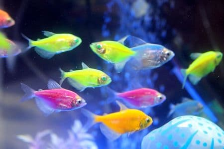
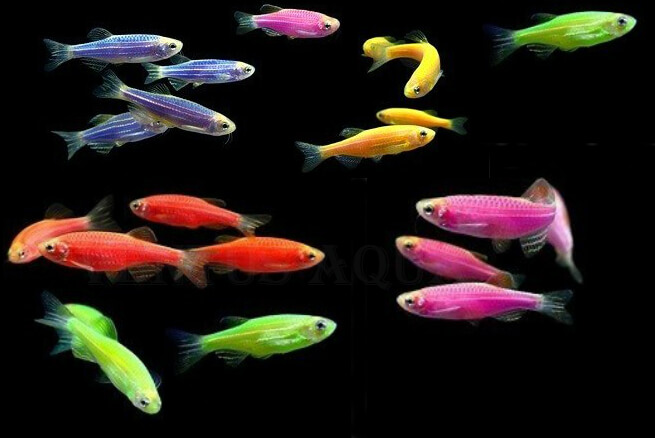
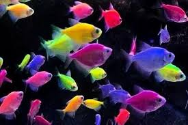
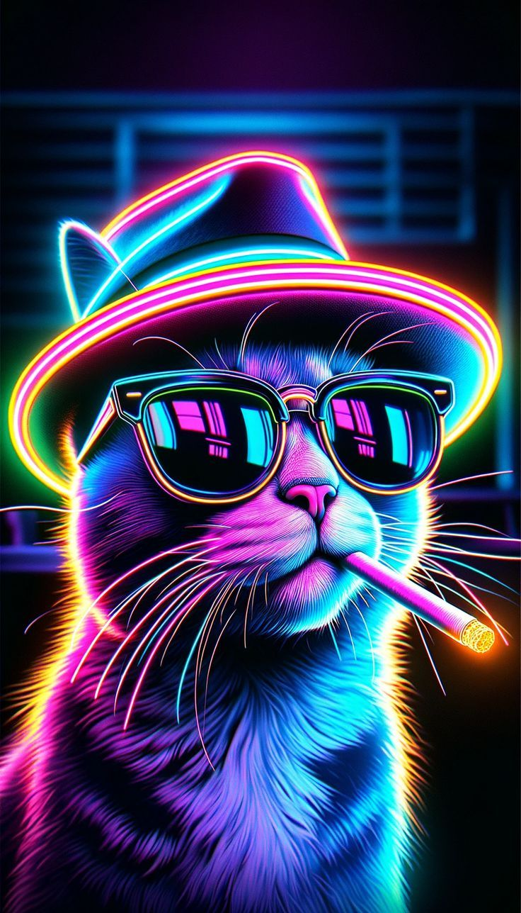
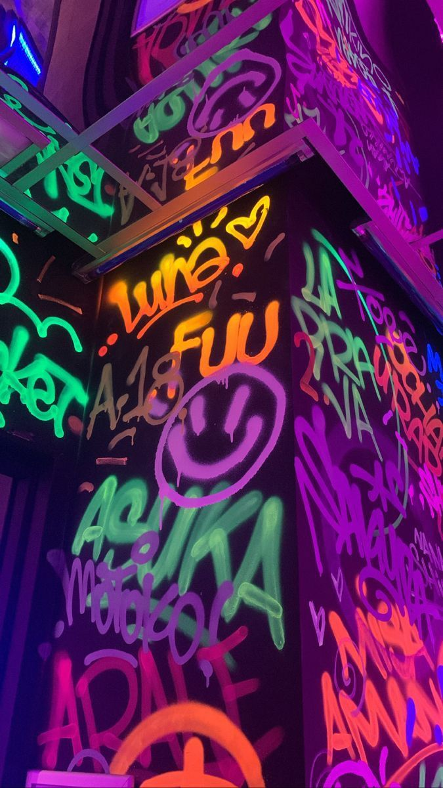
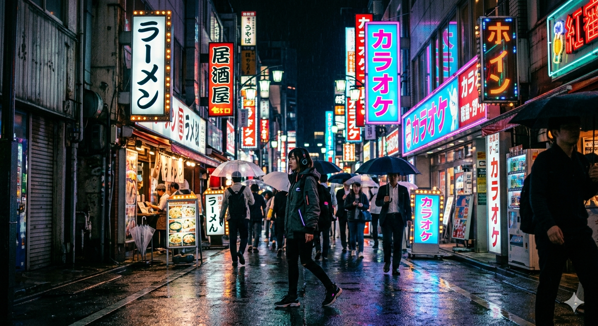

Вільям Рамзай: Людина, що впіймала неон
Сер Вільям Рамзай був справжнім "мисливцем за газами". До відкриття неону він уже знайшов гелій та аргон, за що пізніше отримав Нобелівську премію. 15 червня 1898 року він разом з Морісом Траверсом вперше побачив вогняно-червоне світіння неону в скляній трубці. Це відкриття було настільки несподіваним, що вчені спочатку подумали, що прилади несправні.
Магія кольору: Як неон захопив дизайн
Неоновий колір став основою стилів Retro Wave та Cyberpunk. Через свою яскравість він асоціюється з майбутнім і нічними мегаполісами. Фізика неонових кольорів особлива: вони відбивають світло так інтенсивно, що людському оку здається, ніби предмет світиться сам по собі.
Те, чого ви не знали про неон
Космічний гігант
Неон — 5-й за поширеністю елемент у Всесвіті. Він народжується всередині масивних зірок.
Живий неон: Рибки
В акваріумах живуть рибки "Неони". Вони мають вздовж тіла яскраву смужку, яка сяє точно так само, як неонова вивіска вночі. Це допомагає їм триматися зграєю в темній воді Амазонки.
Він дуже самотній
Це найінертніший газ. Він настільки "гордий", що не утворює жодних сполук з іншими елементами.
Рятувальник
Неонове світло найкраще проходить крізь туман, тому його використовують на маяках та аеродромах.
Галерея експонатів





